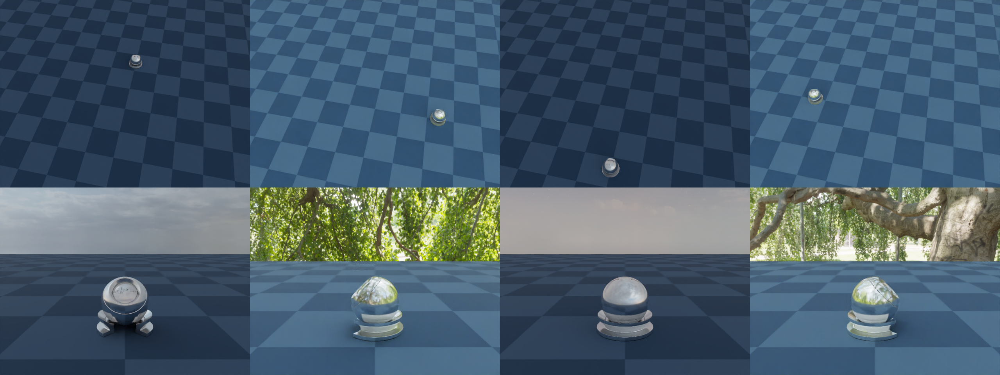

Multiple cameras and parallel environments#
Two orthogonal patterns the Nyx plugin composes for free: multiple cameras in one scene and multiple Genesis environments built in parallel. This example puts both to work at once — two NyxCameraSensors and n_envs=4 — and tiles the resulting (2, 4, H, W, 3) image stack into a single PNG so the symmetry is visible at a glance.

Both features are independent knobs on the same APIs — multi-camera is a second scene.add_sensor call, multi-env is a n_envs=N argument to scene.build. Either alone is already useful (multi-view supervision, batched RL rollouts, synthetic data generation). The two sections below cover what each one changes; the rest of the page covers the bits that only show up when you combine them.
What changes when you add a second camera#
Concretely, nothing in your code except a second scene.add_sensor(NyxCameraOptions(...)) call. Each sensor gets its own resolution, FOV, pose, attachment, and pick_pixel() entry-point. Under the hood the plugin keeps one native renderer alive for the whole scene and contributes every camera (plus its lights, env maps and light fields) to that shared instance.
That sharing is worth a moment because it turns three potential footguns into non-issues:
Lights and light fields are scene-wide.
lightsandlight_fieldsfrom every Nyx sensor are merged at build time, so every env sees the union of them through both cameras. Declare them on whichever camera reads best in code; duplicating them on every camera duplicates the underlying asset. Env maps are the exception — see Different lighting per environment below.Render mode is scene-wide too. Every Nyx sensor must agree on
render_mode— the shared renderer can only serve one mode at a time. MixingERenderModevalues likeFastPathTracerandDebugraises at build.pick_pixelindexes registration order. The first sensor added iscamera_index=0, the second1, and so on, all reachable frompick_pixel()(camera_index, x, y)on any sensor. See Object picking for the ray API itself.
What changes when you add parallel environments#
scene.build(n_envs=N) widens every sensor’s read shape from (H, W, 3) to (N, H, W, 3). The cost is honest: the plugin renders one env at a time internally, so wall-clock time grows linearly with N. The benefit is that the simulator does too — one scene.step() advances every env, and one cam.read() returns the whole batch.
Per-env state lives on the entities, not the camera. After build(), any state setter accepts an (N, ...)-shaped argument and writes a different value into each env:
ball.set_pos([
[ 0.0, 1.2, 0.3],
[ 1.2, 0.0, 0.3],
[ 0.0, -1.2, 0.3],
[-1.2, 0.0, 0.3],
])
That single call is what makes the four columns of the wide overview differ — the camera pose is constant, but the simulator has placed the ball somewhere else in every env. Anything you can set per env in Genesis (rigid pose, joint positions, particle state, …) shows up the same way in the next render.
Different camera positions per environment#
Per-env state is on entities, so to place a camera differently in every env you bind it to one. Add an invisible rigid entity to act as an attachment target, attach the camera to it via entity_idx / offset_T, and set_pos / set_quat it per env — the camera moves with it, exactly the way it would move with a Franka wrist link in Attaching a camera. offset_T is the camera’s pose in the rig’s local frame, so the same offset stays consistent relative to the rig no matter where the rig ends up; per-env position slides the camera around the world, per-env orientation rotates its viewing angle. In this example the rig is set to point outward from the centre of the plane in each env, so the follow row shows the same ball framed from four different radial angles, each against a different slice of the HDRI sky.
Different lighting per environment#
env_maps is the one piece of the camera config that the renderer indexes by env rather than merging scene-wide: env i is lit by env_maps[i]. Passing an N-long tuple to a single NyxCameraOptions is therefore enough to render every env under its own HDRI, with no extra calls or per-step bookkeeping. This example alternates two assets across four envs:
env_maps = (env_map_sky, env_map_studio, env_map_sky, env_map_studio)
Even-indexed envs render under an outdoor sky, odd-indexed envs under a studio softbox. The choice flows through both cameras automatically because the renderer instance is shared, so the top-row wide overview and the bottom-row follow camera both see env 0 lit by env_map_sky, env 1 by env_map_studio, and so on. A few constraints worth knowing:
The mapping is strictly positional. There is no per-env override API or “default” entry; the tuple must be at least
n_envslong.The tuple is collected at build time across every Nyx sensor in the scene. Declare it on one sensor (as here) to keep the source of truth in a single place; declaring it on multiple cameras concatenates the lists and the indexing drifts.
Each entry is a full
EnvironmentMapAsset, so per-env intensity (multiplier), rotation, and tint are all available — useful for domain-randomized lighting on top of a single base HDRI.
Heterogeneous environments: not supported#
The (N, ...)-shaped state setters above all assume every env contains the same geometry — only the state differs. Genesis itself has a stronger form of variation called heterogeneous simulation, where you pass a tuple of morph variants to scene.add_entity and the rigid solver hands each env a different variant:
# Valid Genesis call. Will simulate correctly, but Nyx will NOT render it correctly.
scene.add_entity(morph=(
gs.morphs.Box(size=(0.04, 0.04, 0.04), pos=(0.0, 0.0, 0.1)),
gs.morphs.Sphere(radius=0.03, pos=(0.1, 0.0, 0.1)),
))
The Nyx plugin does not currently support heterogeneous morphs. The scene description the plugin builds at scene.build() time captures a single set of meshes shared across all envs, so even if the rigid solver is dispatching a different variant per env on the physics side, every env will render with the same geometry the plugin saw first. The mismatch is silent — no exception is raised, the image just doesn’t match the simulation.
If you need different models per env, the options today are:
Spawn every variant in every env and toggle their state per env. Add all candidate morphs as separate entities, then in each env push the inactive ones below the plane (or to a far-away corner) via
set_pos. Geometry stays homogeneous from the plugin’s perspective, so rendering is correct.Build separate scenes. Run one Genesis scene per variant and read each one independently. You lose the batched-step speed-up but keep both physics and rendering correct.
State-based variation works fine: positions, joint angles, velocities, masses through domain randomization, and per-env lighting (see Different lighting per environment above). The limitation only applies when you need a different mesh in each env.
Reading the saved image#
The PNG is a 2 × 4 grid. Top row: the wide overview, four times — same camera pose, four different ball positions, with the lighting alternating outdoor sky / studio softbox / outdoor sky / studio softbox across columns. Bottom row: the follow camera, four times — both the camera pose and the ball move per env, with the rig rotated outward from the centre so each cell shows the ball from a different radial angle, lit by the same HDRI as the wide cell directly above it. Comparing top and bottom of the same column tells you per-env state and per-env env maps are shared across cameras; comparing left to right of the same row tells you the per-env variation actually took effect.
Source#
1"""Multi-camera, multi-environment example for the Nyx renderer plugin.
2
3Builds a scene with **two** ``NyxCameraSensor`` instances and ``n_envs=4``
4parallel Genesis environments, then teleports the rendered ball to a
5different spot on the plane in each env. The first camera is a static
6high overhead view shared across every env; the second is a low follow
7camera attached to an invisible rigid rig whose position **and** orientation
8are set per env, so each follow cell approaches the ball from a different
9direction. A single ``read()`` per camera returns a batched
10``(N_ENVS, H, W, 3)`` tensor, which the script tiles into one PNG
11(rows = cameras, columns = envs).
12
13Usage:
14 uv run python examples/07_multi_camera_multi_env.py
15"""
16
17from __future__ import annotations
18
19import math
20import os
21
22import torch
23from PIL import Image
24
25import genesis as gs
26import gs_nyx.nyx_py_renderer as npr
27import gs_nyx.nyx_py_sdk as nps
28from gs_nyx_plugin.nyx_camera_options import NyxCameraOptions
29
30
31HERE = os.path.dirname(__file__)
32PBR_BALL = os.path.join(HERE, "assets", "PBR_Ball.glb")
33ENV_MAP_SKY = os.path.join(HERE, "assets", "kloppenheim_07_puresky_4k.hdr")
34ENV_MAP_STUD = os.path.join(HERE, "assets", "green_sanctuary_4k.hdr")
35OUTPUT_PATH = os.path.join(HERE, "out", "07_multi_camera_multi_env.png")
36
37N_ENVS = 4
38CAM_RES = (640, 480)
39
40# One ball position per env, arranged on a circle of radius R so the wide
41# overview shows the ball at four clearly different spots. The Z component
42# lifts the ball off the plane so it sits cleanly above the ground.
43R = 1.2
44BALL_POSITIONS = [
45 [ 0.0, R, 0.0],
46 [ R, 0.0, 0.0],
47 [ 0.0, -R, 0.0],
48 [ -R, 0.0, 0.0],
49]
50
51# Per-env rig orientation (Z-axis rotation, WXYZ quaternion). Rotates the
52# rig so that the follow camera's "behind" direction always points outward
53# from the centre of the plane — every env sees the ball from a different
54# radial angle, which is what makes the follow row visually distinct.
55RIG_OUTWARD_QUATS = [
56 [ 0.0, 0.0, 0.0, 1.0], # 180° around Z
57 [math.sqrt(0.5), 0.0, 0.0, -math.sqrt(0.5)], # -90° around Z
58 [ 1.0, 0.0, 0.0, 0.0], # 0° around Z
59 [math.sqrt(0.5), 0.0, 0.0, math.sqrt(0.5)], # +90° around Z
60]
61
62
63def main() -> None:
64 gs.init()
65 os.makedirs(os.path.dirname(OUTPUT_PATH), exist_ok=True)
66
67 scene = gs.Scene(
68 sim_options=gs.options.SimOptions(dt=0.01),
69 show_viewer=False,
70 )
71
72 scene.add_entity(morph=gs.morphs.Plane(plane_size=(10.0, 10.0)))
73
74 # Override the GLB's embedded materials with a polished sapphire-blue
75 # chrome — low roughness + full metallic so each follow camera's
76 # reflection of the HDRI sky reads as a distinct slice of the dome.
77 # ``align=False`` keeps the link origin at the GLB's authored pivot
78 # (the cup base) instead of re-framing it to the composite's COM, so
79 # ``set_pos(z=0)`` lands the cup cleanly on the plane.
80 ball = scene.add_entity(
81 morph=gs.morphs.Mesh(file=PBR_BALL, pos=(0.0, 0.0, 0.0), align=False),
82 surface=gs.surfaces.BSDF(metallic=1.0, roughness=0.15),
83 )
84
85 # Invisible rigid rig used as the follow camera's attachment point.
86 # Both its position and its orientation are set per env, which is how
87 # the follow camera ends up at a different world pose in every env.
88 # Must be added before any FEM / MPM / PBD entity so its ``entity.idx``
89 # matches the rigid solver's index — that's what
90 # ``NyxCameraOptions.entity_idx`` uses.
91 follow_rig = scene.add_entity(
92 morph=gs.morphs.Sphere(
93 pos=(0.0, 0.0, 0.0), radius=0.01,
94 visualization=False, fixed=True,
95 ),
96 )
97
98 # Lighting. ``env_maps`` is indexed positionally by env: env ``i`` is
99 # lit by ``env_maps[i]``. We alternate two HDRIs across the four envs
100 # so even envs render under a clear outdoor sky and odd envs render
101 # under a studio softbox setup — same scene, two completely different
102 # lighting moods, visible side by side in the tiled output. ``lights``
103 # and ``light_fields`` (not used here) are merged scene-wide instead.
104 def _make_env_map(path: str) -> nps.EnvironmentMapAsset:
105 asset = nps.EnvironmentMapAsset()
106 asset.texture = path
107 asset.layout = nps.EEnvMapLayout.LongLat
108 asset.multiplier = 2.0
109 return asset
110
111 env_map_sky = _make_env_map(ENV_MAP_SKY)
112 env_map_studio = _make_env_map(ENV_MAP_STUD)
113 per_env_maps = (env_map_sky, env_map_studio, env_map_sky, env_map_studio)
114
115 # Camera A — high overhead overview. Same world pose in every env; what
116 # differs per column is the simulator state inside the frame.
117 wide_cam = scene.add_sensor(NyxCameraOptions(
118 res = CAM_RES,
119 pos = (0.5, -2.5, 4.0),
120 lookat = (0.0, 0.0, 0.5),
121 fov = 42.0,
122 spp = 64,
123 render_mode = npr.ERenderMode.FastPathTracer,
124 env_maps = per_env_maps,
125 ))
126
127 # Camera B — eye-level follow camera. ``offset_T`` is the camera pose
128 # in the rig's local frame: 1.1 m back along the rig's -Y axis and
129 # 0.45 m above it, aimed at the ball portion of the composite (0.25 m
130 # above the cup base). Rotating the rig per env rotates the camera's
131 # relative pose with it, so the follow cell for each env shows a
132 # different radial angle on the same ball.
133 offset_T = gs.utils.geom.pos_lookat_up_to_T(
134 torch.tensor((0.0, -1.1, 0.45), dtype=torch.float32),
135 torch.tensor((0.0, 0.0, 0.25), dtype=torch.float32),
136 torch.tensor((0.0, 0.0, 1.0), dtype=torch.float32),
137 ).cpu().numpy()
138
139 follow_cam = scene.add_sensor(NyxCameraOptions(
140 res = CAM_RES,
141 fov = 45.0,
142 spp = 64,
143 render_mode = npr.ERenderMode.FastPathTracer,
144 entity_idx = follow_rig.idx,
145 offset_T = offset_T,
146 ))
147
148 # ``n_envs=N`` makes every sensor return a batched tensor:
149 # ``cam.read().rgb`` has shape ``(N_ENVS, H, W, 3)``.
150 scene.build(n_envs=N_ENVS)
151
152 # Per-env state setters. All three calls share the outer dimension
153 # ``N_ENVS``: ball position, rig position (rig follows the ball), and
154 # rig orientation (rig points outward in each env).
155 ball.set_pos(BALL_POSITIONS)
156 follow_rig.set_pos(BALL_POSITIONS)
157 follow_rig.set_quat(RIG_OUTWARD_QUATS)
158
159 # One step drives every sensor; one ``read()`` returns the full batch.
160 scene.step()
161 wide_batch = wide_cam.read().rgb.cpu().numpy()
162 follow_batch = follow_cam.read().rgb.cpu().numpy()
163
164 # Tile: rows = cameras (wide on top, follow below), columns = envs.
165 H, W = CAM_RES[1], CAM_RES[0]
166 grid = Image.new("RGB", (W * N_ENVS, H * 2))
167 for env_idx in range(N_ENVS):
168 grid.paste(Image.fromarray(wide_batch[env_idx]), (env_idx * W, 0))
169 grid.paste(Image.fromarray(follow_batch[env_idx]), (env_idx * W, H))
170 grid.save(OUTPUT_PATH)
171 print(f"Saved {OUTPUT_PATH}")
172
173
174if __name__ == "__main__":
175 main()
Run it:
uv run python examples/07_multi_camera_multi_env.py
The PNG is written to examples/out/07_multi_camera_multi_env.png. The Sphinx build copies it to _static/generated/examples/07_multi_camera_multi_env.png and embeds it at the top of this page, so the docs site always shows whatever the latest run produced.
See also#
Attaching a camera — Full walk-through of
entity_idx/offset_Tand Genesis’ sensor-attachment lifecycle. The follow camera here is the same mechanism, just bound to an invisible rig instead of a robot link.Sensor lifecycle — When the shared renderer is created (after the last
NyxCameraSensorfinishes building) and the implications for sensors added or read in unusual orders.Hello, Nyx — The single-camera, single-env baseline. Diff this example against it to see exactly which lines flip on multi-camera and multi-env behaviour.